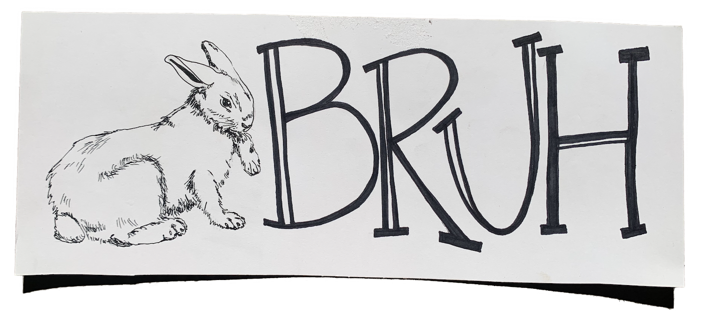

Mae Craford is a graphic designer who knows her way around a website, while staying true to her life long love of branding. Various talents included in Mae's tool belt range from hand painted posters, to shooting short films, the occasional sticker making, and even traditional linocut.
After graduating from Parsons School of Design, Mae returned to her native San Francisco Bay Area to freelance in different intersections of design, gaining perspective and experience. Her work has lead her to clients in industries ranging from entertainment to biotechnology.
She currently works on the displays & signs at Trader Joe's store #81.
Along with design Mae spends her days
jamming out to tunes she loves,
re watching movies that made her, and learning new things.
For more on Mae, you can read the Maezine.
Check out my resume
Shop my stickers
Browse my posters
You can also find me on Instagram and LinkedIn.
maecraford@gmail.com
650-842-0692
Personal Artwork

"Bruh"
Pen & Paper
2020
"Damn, That's Crazy"
Linocut
2020

"gma & gpa"
Illustrator
2023
"charmed"
Acrylic & Cardboard
2022
"Fundamental"
Acrylic & Cardboard
2023
"Do Better"
Marker & Paper
2020
"That Hurts"
Acrylic & Cardboard
2023
"Bug Me"
Acrylic & Cardboard
2023
"Supermarket"
Acrylic & Cardboard
2022

"@work"
Illustrator
2023
"Cri' sis"
Acrylic & Cardboard
2023
"Bean Me"
Acrylic & Cardboard
2020

"Gnarly"
Illustrator
2021
"evolve"
Acrylic & Cardboard
2023
"Damn, That's Crazy"
Acrylic & Cardboard
2022

"Quitter"
Collage
2020
"One Trick"
Acrylic & Cardboard
2022

"Warriors"
Acrylic & Cardboard
2022
"Cursed"
Acrylic & Cardboard
2022